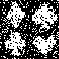

最小
最大
平均値
標準偏差
標準誤差
0
255
82.357
119.241
1.49051
−−−−−−＞

最小
最大
平均値
標準偏差
標準誤差
0
255
96.8606
123.396
1.54245
| オプション | 必須項目/選択項目 | 説明 | デフォルト |
|---|---|---|---|
| -i | 必須 | 入力ファイル設定 | NULL |
| -o | 必須 | 出力ファイル設定 | NULL |
| -r | 選択 | 切り取る範囲を座標で設定 | blx(0.0),bly(0.0),brx(0.0),bry(0.0) trx(0.0),try(0.0),tlx(0.0),tly(0.0) |
| -x | 選択 | 入力ファイルの幅を設定（画像数は変わらない） | 処理前の幅(1.0/* Default is set by -r */) |
| -y | 選択 | 入力ファイルの高さを設定（画素数は変わらない） | 処理前の高さ(1.0/* Default is set by -r */) |
| -a | 選択 | 画像の傾きの角度を設定 | 0.0 |
| -W | 選択 | 出力ファイルの幅を設定（画素数も同様に変化する） | 1.0 |
| -H | 選択 | 出力ファイルの高さを設定（画素数も同様に変化する） | 1.0 |
| -Shift | 選択 | 関心領域をシフトする | ShiftX(0.0),ShiftY(0.0) |
| -truePitch | 選択 | 螺旋状の幅の設定 | 430.0 |
| -dY | 選択 | truePitchの数を設定 | 0.0 |
| -Ly | 選択 | y軸のtruePitch開始位置を設定 | 5.0 |
| -S | 選択 | 拡大・収縮させる | 1 |
| -m | 選択 | モード | 0 |
| -h | 選択 | ヘルプを表示 |
| モード | 説明 |
|---|---|
| 0 | 最短距離法 |
| 1 | 線形補間法 |
| 2 | ３次補間法 |
| 3 | 多項式法 |
|
最小 |
0 |
ノイズを加えたものを使用 −−−−−−＞ |
|
最小 |
0 |
 |
最小 |
0 |
※特に変わりがない |
最小 |
0 |
| -x=100,-y=100の時 | ||
最小 |
0 |
|
| -x=50,-y=50の時 | ||
最小 |
0 |
| -a=30の時 | ||
最小 |
0 |
| -W=100,-H=100の時 | ||
|  | 最小 |
0 |
| -W=50,-H=50の時 | ||
最小 |
0 |
| -Shift=10の時 | ||
最小 |
0 |
|
| -Shift=30の時 | ||
最小 |
0 |
| -S=2の時 | ||
最小 |
0 |
|
| -S=3の時 | ||
最小 |
0 |
| モード：０ | ||
最小 |
0 |
|
| モード：１ | ||
最小 |
0 |
|
| モード：２ | ||
最小 |
-89.3528 |
|
| モード：３ | ||
 |
最小 |
-44414.5 |